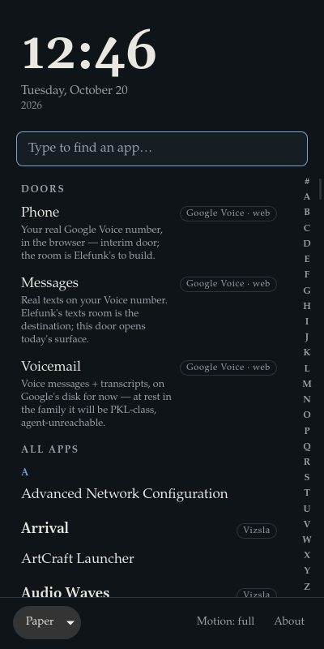
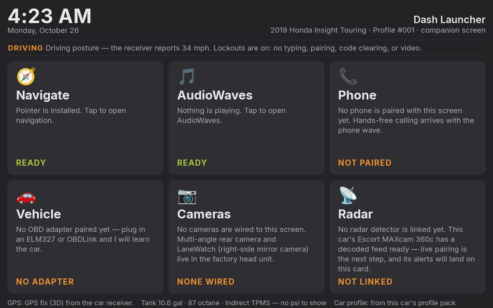
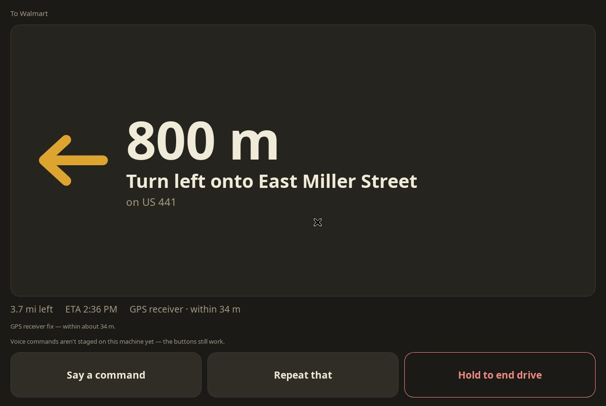

Being built now
Future developments
Vizsla is one system in every shape — the same apps and files, rearranged for the screen in front of you, never reduced. The desktop and TV faces run today. The phone and dash faces are being built now, and this page shows them as they actually look while they’re being built. Like everywhere else on this site, every picture here is a real capture of the real software — and each caption says where the capture came from.
The phone’s face — Phone Launcher
The Phone Launcher is the system wearing a phone’s shape: a clock, one search box, and the whole app list in alphabetical order, with the everyday doors — Phone, Messages, Voicemail — standing at the top. It is honest about being in between: today those three doors open the phone service’s web pages, and the picture says so, in so many words, right on the door. The destination is Elefunk’s own rooms, below.

Elefunk, in your pocket
Elefunk — mail, texts, phone, voicemail, tasks, and people in one place — is part of the build story, not a later extra. Its pocket build already runs on an ordinary phone today: it makes and takes real calls, receives real texts, and keeps the same tasks and people as the desktop. Five calm tabs along the bottom, and nothing shouts.


One view is missing from this page on purpose: mail. The only captures of Elefunk’s mail view show real letters from real people, and those are not ours to publish. When there is a capture that shows the mail view without showing somebody’s mail, it will go here.
The car’s face — Dash Launcher
The Dash Launcher is the system wearing the car’s shape: a few big cards, type you can read at a glance, and a posture that changes with the car. Parked, it lets you browse and set things up. Driving — the picture below — it locks the fiddly things away: no typing, no pairing, no video, stated plainly at the top of the screen. Each card says what is true, including the unglamorous parts: no phone paired yet, no camera wired, no adapter plugged in.

Pointer, in Dash view
Pointer is Vizsla’s navigation: maps and routing that live on the machine itself, not on a server. Its Dash view is built for a moving car — one instruction at a time, as large as it can be, with the distance, the time left, and what the GPS receiver actually knows, in plain words underneath. No map to squint at, no clutter competing with the road.

AudioWaves, in Dash view
AudioWaves — podcasts and audiobooks, with transcription that runs on your own machine — opens inside the Dash Launcher like everything else in the car: full screen, big controls, and a Return to Dash button that takes you back to the car’s face. What you were playing, and where you left it, is the first thing on the screen.

The honest hurdle: the hardware
Everything above is software, and the software is coming along. The biggest hurdles are not in the software. They are the hardware.
You can mimic these formats today using a touchscreen laptop or a 2-in-1 — that is exactly how the phone and dash faces are run and tested right now, at the right sizes, on ordinary machines. But there isn’t compatible tablet hardware or phone hardware today: no tablet you can buy that this system can move into, and no phone either. The screens exist. The machines behind them that would let a system like this one in do not, yet.
So the interfaces are being built ahead of the hardware that will run them. That is a deliberate order, not an accident: when the hardware arrives — a tablet or a phone this system is allowed to live on — the faces will already be finished, tested, and calm, instead of starting that day. Until then, this page is labelled what it is: in development, shown honestly, rigs and all.